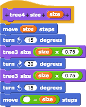
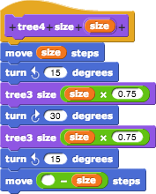
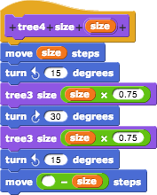
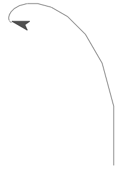
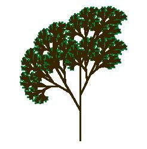

Last time, we tried to generalize this pattern:

by making a single block that took the level number as an input, instead of as part of the block name:

Unfortunately, it didn't work:

The sprite draws smaller and smaller left branches, finally just spinning around in one place, without ever drawing a right branch.
What went wrong? The problem is that the original numbered tree scripts aren't all the same. The first one, tree1, is different; it just draws a trunk, without any branches:

So our all-in-one tree block has to do something different from what's now in the script for the case levels=1.

With this change, we can draw trees of any complexity. Here's a level-9 tree:

(Note: the amount of time required to draw the tree goes up very quickly with the number of levels, so we don't recommend trying 100 levels.)
This general code pattern, with a simple base case that doesn't call the block itself, is typical of recursion. (Recursion is the name for a block that calls itself in its script.) There's a base case and a recursice case.
Questions:
1. What's the base case in the vee program?
2. Sometimes you can make a recursive procedure more elegant by having a smaller base case. In our tree program, what would a "zero level" tree mean? Try rewriting tree so that the base case is levels=0.
3.See if you can make a tree like the first picture in this activity:

It's different from what we've done so far because the smaller trees are drawn part way up the trunk, instead of at the top of the trunk, and because the pen color is green for the lowest-level branches (the tree1-like ones) and brown for the others. You don't have to get it exactly like the picture; just try to make a more realistic-looking tree.